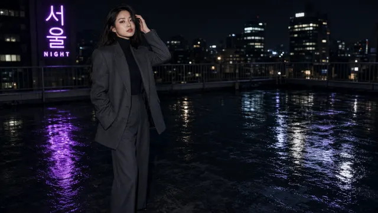

Coolcat
AI ART / PROMPTS
作品
人像
UI
关于
@minaoneday ↗
COOLCAT / GALLERY
#人像
27 件相关作品
梅园里的唐风贵女 Tang Noblewoman in the Plum Garden
2026-09-27 · #古风 #唐风
画室窗前的插画师 Illustrator by the Studio Window
2026-09-27 · #人像 #窗光
小站站务员 The Little Station Attendant
2026-09-27 · #胶片 #昭和
旋转楼梯上的城市 City View from a Spiral Staircase
2026-09-27 · #职场 #都市
雪中回眸 Farewell Glance in the Snow
2026-09-27 · #人像 #雪景
空中连廊疾行 Skybridge Stride
2026-09-27 · #职场 #动感
首尔面包店的早晨 Seoul Bakery Morning
2026-09-27 · #咖啡馆 #韩系
海边小卖部绣球胶片 Seaside Kiosk Hydrangea Film Portrait
2026-09-27 · #胶片 #运动模糊
天台丝绒之夜 Rooftop Velvet Evening
2026-09-27 · #夜景 #晚装

天台闪光灯时装特写 Rooftop Flash Editorial
2026-09-27 · #时装 #闪光灯
冷艳冬日女王肖像 Regal Winter Portrait
2026-09-27 · #棚拍 #人像
雨天阅览室 Rainy-Afternoon Reading Room
2026-09-27 · #抓拍 #图书馆
昭和拉面摊夜色 Showa Ramen Stall Night Candid
2026-09-27 · #胶片 #昭和
冰川研究员肖像 Glacier Researcher Portrait
2026-09-27 · #人像 #科幻
夜班电车 Night Train Commute
2026-09-27 · #通勤 #电车
霓虹游戏厅 Neon Arcade
2026-09-27 · #霓虹 #派对
图书馆档案员胶片人像 Archivist Film Portrait
2026-09-27 · #胶片 #职业
研究生校园台阶 Grad Student on Campus Steps
2026-09-27 · #校园 #学院风
玻璃花房下午茶 Conservatory Afternoon Tea
2026-09-27 · #下午茶 #优雅
设计工作室的微笑 Design Studio Smirk
2026-09-27 · #职场 #抓拍
凸面镜里的雪夜自拍 Snowy Convex-Mirror Selfie
2026-09-27 · #人像 #街头
银色短发哥特黑白人像 Silver Pixie Goth Portrait
2026-09-27 · #黑白 #哥特
烬·黑白侧光肖像 Ember B&W Profile Portrait
2026-09-27 · #黑白 #人像
黑白波波头光影肖像 B&W Bob Chiaroscuro Portrait
2026-09-27 · #黑白 #人像
银杏公园闲谈抓拍 Ginkgo Park Conversation Candid
2026-09-27 · #抓拍 #公园
档案馆窗边的研究员 Researcher at the Archive Window
2026-09-27 · #图书馆 #知性
建筑师模型讲解 Architect Presenting a Model
2026-09-27 · #职场 #建筑